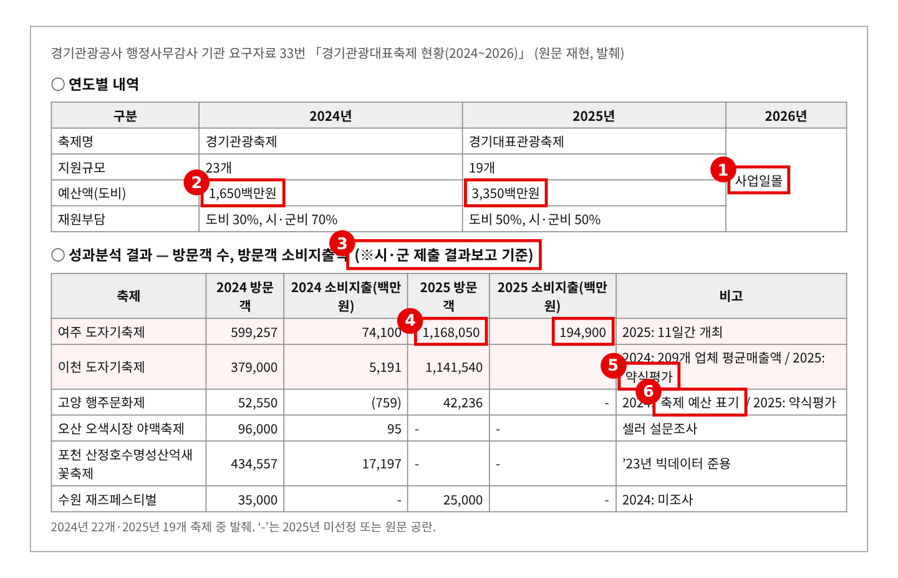
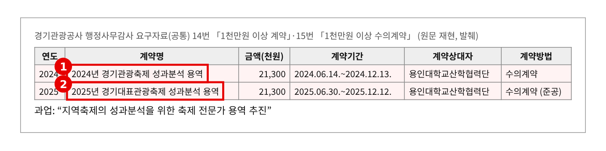
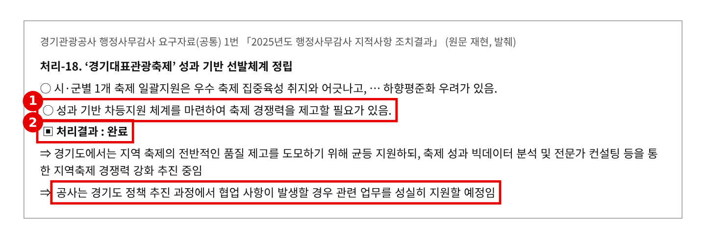
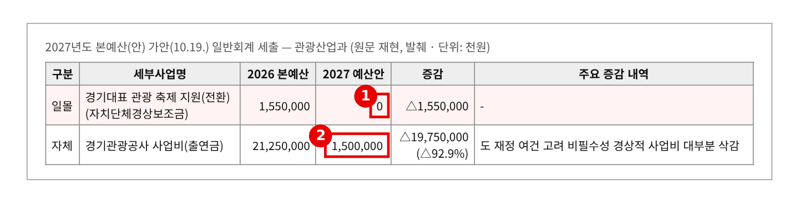
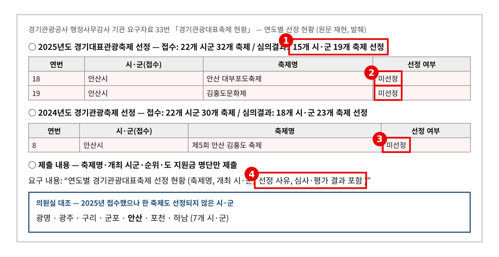

2026년 행정사무감사 질의서 (발언용 · 5분) — 기관 3일차
축제에 50억 쓰고, 남은 건 시군이 써낸 숫자뿐입니까
— 경기대표관광축제 성과분석과 탈락 시군 평가 결과
문화체육관광위원회 황은화 위원 → 경기관광공사 사장
| ① 용역은 했는데 숫자는 시군 것 그대로 | 성과분석 용역 2024·2025년 각 2,130만 원(용인대 산학협력단, 수의계약). 그런데 성과표는 “시·군 제출 결과보고 기준” → 소비지출 산정이 업체 평균매출·셀러 설문·축제 예산 표기·2023년 빅데이터 준용·미조사로 제각각 |
| ② 1년 만에 두 배·세 배 | 여주도자기축제 방문객 60만 → 117만 명, 소비지출 741억 → 1,949억 원. 이천도자기축제 38만 → 114만 명(약식평가) → 검증하지 않은 숫자로는 어느 축제가 잘했는지 판단할 수 없다 |
| ③ 지적은 “완료”, 사업은 일몰 | 2025 행감 「성과 기반 차등지원 체계」 지적 → “완료”. 2026년 공사 사업 일몰, 도 직접 15.5억도 2027년 0원 → 탈락 시군은 사유도 모른다 — 안산 2년간 3건 신청·모두 미선정 |
※ 의원실 메모 (발언 제외) — 다른 위원 요구자료와 겹치는지 점검 · 겹칠 위험 높음. 33번(대표축제 현황)은 8명 공동 요구(이오수·김승기·안시현·이미정·이지혜·전예슬·최성운·황은화), 3번(지역축제심의위원회·현장평가·성과분석)은 김승기·안시현·전예슬 위원 요구다. “왜 일몰했나, 시군 피해는”은 앞 순서에서 나올 가능성이 크다. · 그래서 이 질의는 ① 용역까지 했는데 숫자를 검증하지 않았다 ② 탈락 시군에 평가 결과를 돌려주지 않았다로 좁힌다. 이미정 위원도 33번 공동 요구자 — 질의 주제를 미리 맞춰 둘 것. · 2026년 「경기대표 관광 축제 지원(전환)」 15.5억은 관광산업과가 시군에 직접 주는 보조금이다(공사 소관 아님). 공사에는 “2년간 쌓은 평가 자료를 어디에 넘기느냐”만 묻는다. 2027년 공사 사업비 212.5억→15억은 6번(경영실적, 5명 공동)과 겹쳐 한 줄도 넣지 않았다. · 같은 날 의료관광 질의가 따로 있다. 두 질의 합쳐 시간을 맞춰야 한다. |
※ 발언 중 [근거 n] 표시는 맨 뒤 「근거자료」 번호입니다. 읽지 않고, 해당 자료를 화면에 띄웁니다.
■ 발언 — 도입
사장님, 경기대표관광축제에 대해 여쭙겠습니다.
공사는 2024년과 2025년, 2년 동안 도비 50억 원으로 시군 축제를 뽑아 지원하고 성과를 분석했습니다. 올해 공사 사업은 일몰됐습니다. 사업은 끝났지만, 2년 동안 무엇을 남겼는지는 따져 봐야 합니다. [근거 1]
▶ 질문 1. 용역까지 맡겼는데, 성과 숫자는 시군이 써낸 그대로입니다
공사는 해마다 성과분석 용역을 맡겼습니다. 2024년, 2025년 모두 용인대 산학협력단에 2,130만 원씩입니다. [근거 2]
그런데 공사가 낸 성과표에는 “시·군 제출 결과보고 기준”이라고 적혀 있습니다. 소비지출을 어떤 곳은 업체 평균 매출로, 어떤 곳은 셀러 설문으로 셌습니다. 축제 예산을 그대로 적은 곳도, 2023년 빅데이터를 그대로 쓴 곳도, 아예 조사하지 않은 곳도 있습니다. [근거 1]
그러다 보니 숫자가 크게 튑니다. 여주도자기축제는 1년 만에 방문객이 60만 명에서 117만 명, 소비지출은 741억 원에서 1,949억 원이 됐습니다. 이천도자기축제는 38만 명에서 114만 명이 됐는데, 비고에는 “약식평가”라고 되어 있습니다. [근거 1]
사장님, 용역은 무엇을 검증했습니까? 이 숫자들, 공사가 확인한 겁니까?
▷ "방문객 추정은 시군 몫이고, 공사는 취합했다"
→ 그러면 성과분석이 아니라 취합입니다. 2년 치 용역 결과보고서를 내 주십시오. 세는 방법이 다른 숫자를 한 표에 놓고 비교하면 안 됩니다.
▶ 질문 2. 떨어진 축제는 왜 떨어졌는지도 모릅니다
작년 행감에서 “성과에 따라 차등 지원하는 체계를 만들라”고 지적했습니다. 공사는 “완료”라고 답했습니다. 그런데 올해 공사 사업은 일몰됐고, 도가 직접 편성한 15억 5천만 원도 내년 가안에서는 0원입니다. [근거 3][근거 4]
떨어진 축제는 이유도 모릅니다. 안산은 2024년 김홍도축제, 2025년 대부포도축제와 김홍도문화제를 냈지만 모두 떨어졌습니다. 2025년에만 7개 시군이 한 곳도 뽑히지 못했습니다. 제가 선정 사유와 심사 결과를 요구했는데, 받은 건 명단뿐이었습니다. [근거 5]
사장님, 2년 동안 현장평가를 66번 했습니다. 그 결과를 떨어진 시군에 알려 준 적이 있습니까? 사업이 끝나면 이 자료는 어디로 갑니까?
▷ "심사 결과는 공개하지 않는다"
→ 점수를 공개하라는 게 아닙니다. 해당 시군에 무엇이 부족했는지 알려 주라는 겁니다. 그래야 다음에 고칠 수 있습니다.
■ 마무리 · 요구사항
사장님, 축제 지원은 끝나도 축제는 계속 열립니다. 2년 동안 50억 원을 쓰고 남은 게 시군이 써낸 숫자뿐이라면 아쉽습니다. 검증된 자료와 평가 결과만큼은 시군에 남겨 주십시오. 꼼꼼히 챙기겠습니다.
하나, 2024·2025년 성과분석 용역 결과보고서와 축제별 방문객·소비지출 산정 방식을 감사 종료 전까지 내 주십시오.
둘, 2024·2025년 선정 심사표와 점수, 탈락 축제 평가 의견과 시군 통보 여부를 감사 종료 전까지 내 주십시오.
셋, 2년간 현장평가·성과분석 자료를 시군과 도에 넘기는 계획을 12월까지 보고해 주십시오.
■ 참고 · 감사 중 추가 요구자료
· 2024·2025년 성과분석 용역 과업지시서(검증 범위 포함)
· 안산 김홍도축제(2024)·대부포도축제·김홍도문화제(2025) 현장평가 결과
· 예상 소요시간 — 발언 약 2분 50초(842음절) + 집행부 답변 약 40초 + 자료 화면 전환 약 25초 = 약 3분 55초. 재질의 2개와 답변까지 쓰면 약 4분 40초 — 5분 안. ※ 분당 300음절 기준
근 거 자 료
빨간 상자·번호는 발언에서 짚는 부분입니다. "원문 재현"은 요구자료 원문 표를 그대로 옮긴 것이고, "의원실 대조"는 원자료를 맞대어 본 결과입니다.
▶ 도입·질문 1 관련
근거 1. 지원 규모와 성과분석 결과 — “시·군 제출 결과보고 기준” 
※ 출처: 경기관광공사 「2026년 행정사무감사 기관 요구자료」 33번 「경기관광대표축제 현황(2024~2026)」(상생협력팀) — 이오수·김승기·안시현·이미정·이지혜·전예슬·최성운·황은화 위원 요구 / 같은 표가 3번(김승기·안시현·전예슬 위원 요구)에도 있음 |
근거 2. 성과분석 용역 — 2년 연속 같은 기관, 수의계약 
※ 출처: 경기관광공사 「2026년 행정사무감사 요구자료(공통)」 15번 「최근 3년간 1천만원 이상 기관별 수의계약 현황」, 14번 「2025~2026년 1천만원 이상 계약 발주현황」 |
▶ 질문 2 관련
근거 3. 2025년 행감 지적 「성과 기반 선발체계 정립」 — 공사 “완료” 
※ 출처: 경기관광공사 「2026년 행정사무감사 요구자료(공통)」 1번 「2025년도 행정사무감사 지적사항 조치결과」 처리-18 |
근거 4. 2027년 본예산(안) — 도 직접 지원 15.5억도 일몰 
※ 출처: 「2027년 본예산(안) 일반회계 세출」 가안(10.19. 공개분, 최종본 아님) 관광산업과 |
근거 5. 선정 결과 — 안산 3건 모두 미선정, 사유·심사 결과는 미제출 
※ 출처: 경기관광공사 「2026년 행정사무감사 기관 요구자료」 33번 「경기관광대표축제 현황」 연도별 선정 현황 (접수·선정 명단 의원실 대조) |